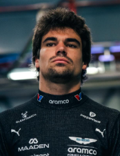

Lance Stroll
Lance Stroll
Team: Aston Martin
Team Principal: Mike Krack
Number: 18
Nationality: Canada
Debut: 2017
Born: 29 October 1998
History: Canadian driver Lance Stroll has competed in Formula 1 since 2017 and established himself as an experienced presence within Aston Martin. Throughout his career, Stroll demonstrated strong performances in mixed-weather conditions and earned multiple podium finishes, including memorable drives in difficult circumstances. While often operating under significant scrutiny, he continued contributing to Aston Martin’s growth as the team evolved into a regular front-running competitor. His experience and familiarity with the organization remained valuable assets entering the 2026 season.
